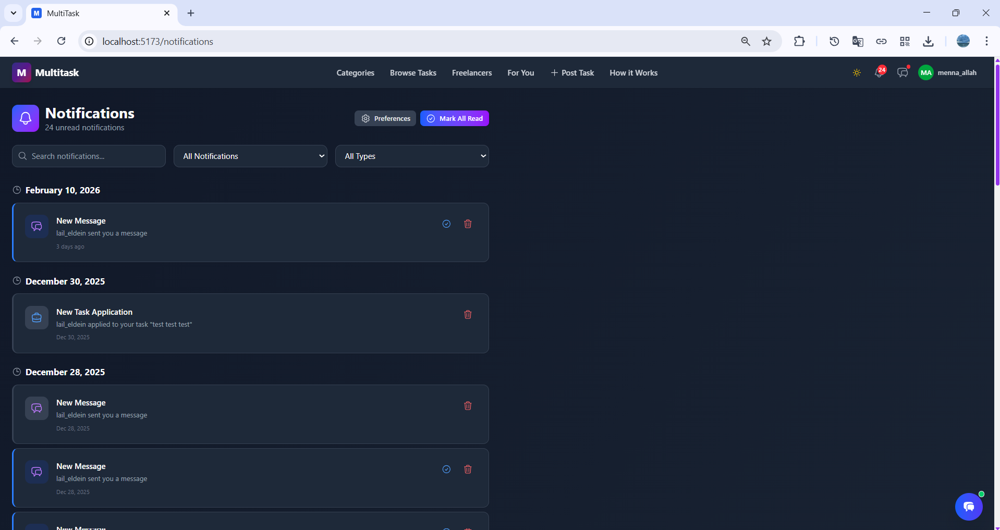

Realtime¶
This page defines how MultiTask delivers low-latency updates for chat and notifications while preserving consistency with persisted backend state.
Why Realtime¶
WebSockets are used to reduce polling and provide immediate feedback in collaboration-heavy workflows.
Realtime Surfaces¶
- Conversation threads and live message delivery.
- Notification inbox and unread badge updates.
- Selected task or payment state changes relevant to participants.
WebSocket Channels¶
ws://localhost:8000/ws/chat/<conversation_id>/ws://localhost:8000/ws/notifications/
Event Reliability Strategy¶
- Persist message/notification records before broadcasting events.
- Authorize channel subscription by JWT identity and membership.
- Re-fetch canonical API resources after reconnect or suspected drift.
- Use unread counters and message timestamps as reconciliation anchors.
Message Delivery Sequence¶
sequenceDiagram
participant A as Sender App
participant WS as Channels Layer
participant API as Messaging Service
participant DB as PostgreSQL
participant B as Receiver App
A->>WS: websocket message payload
WS->>API: validate membership + payload
API->>DB: persist message + metadata
API-->>WS: persisted event
WS-->>A: ack/event echo
WS-->>B: new message event
Recommended Client Behavior¶
- Connect websocket after authenticated session is available.
- Optimistically render local message while waiting for server ack.
- Replace temporary message with persisted payload returned by event.
- On disconnect, reconnect and re-fetch latest messages/notifications via REST.
- Ignore events for conversations not in active scope.
Security Controls¶
- Reject anonymous or expired-token websocket connections.
- Enforce participant-only access for conversation streams.
- Validate payload schema before persistence and fanout.
UI Evidence¶
| Realtime Area | Preview |
|---|---|
| Conversation view |  |
| Notifications center |  |
| Notifications dropdown |  |